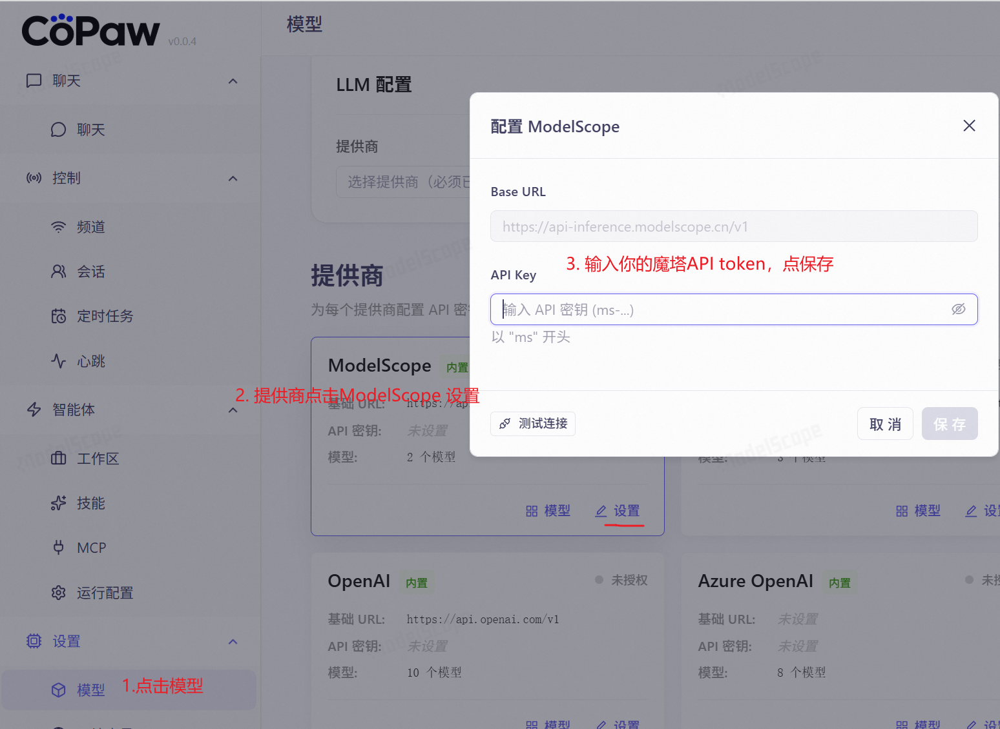
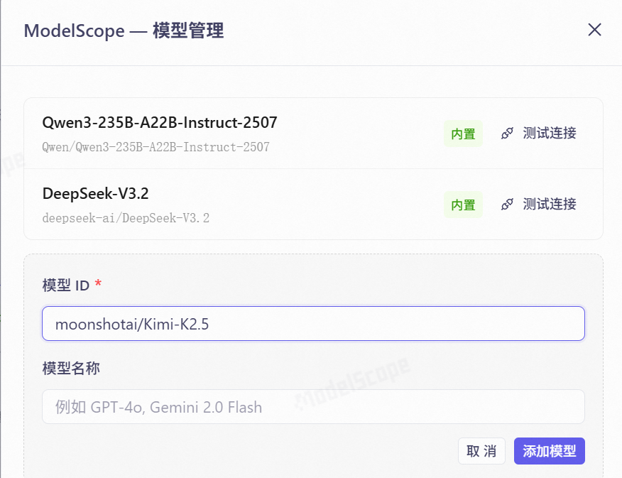
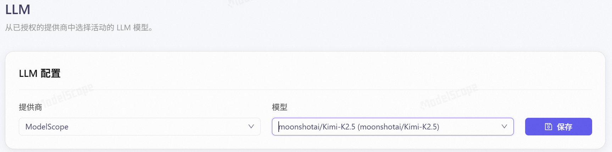
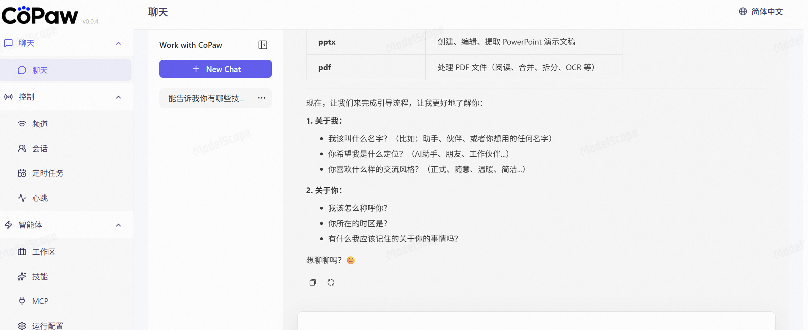
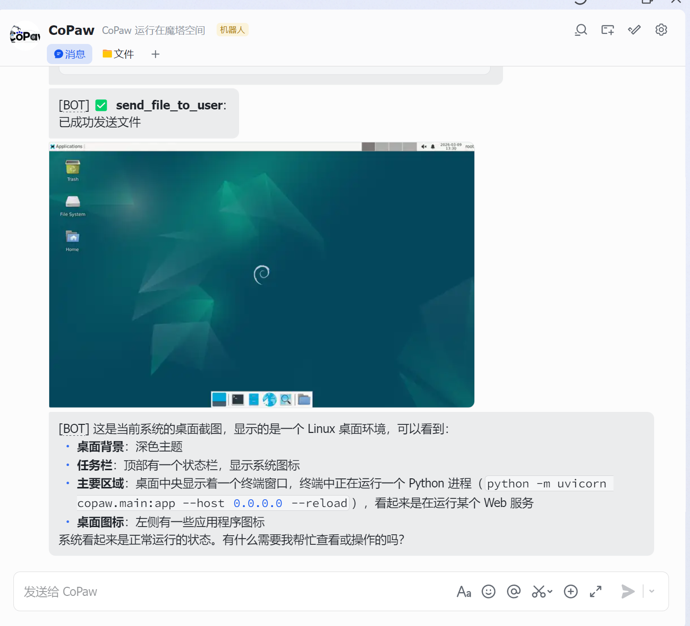

附录 A06：无需购买 API 与云主机，也能体验“养虾”的快乐 (CoPaw 零成本教程)¶
🦐 什么是“养虾”？
CoPaw (Copilot Paw) 是由 AgentScope 团队开源的一款超可爱的个人 AI 助理。它的标志性 Mascot 是一只活蹦乱跳的“赛博大虾”，因此在开发者圈子里，使用 CoPaw 通常被称为“养虾”。
通常，部署一个全功能的 AI Agent 需要云服务器和昂贵的 API Key。但今天，我们将利用魔搭社区 (ModelScope) 的创空间和免费模型 API，一键“白嫖”属于你的专属 AI 助理！
🎯 课前准备¶
在开始“养虾”之前，请确保你已经拥有了魔搭社区 (ModelScope) 的账号和 API Key。
- 如果你还没有，请出门左转查看：👉 附录 A：开发者账号申请指南。
- 请准备好你的魔搭 Access Token（以
sk-开头）。
🚀 第一步：魔搭创空间一键部署 (无需安装)¶
传统的开源项目需要你在本地执行 git clone，安装一堆 Python 依赖环境，非常容易报错。而魔搭的“创空间 (Spaces)”提供了一键克隆运行的魔法。
-
访问官方创空间： 打开浏览器，访问 CoPaw 在魔搭的官方空间： 🔗 https://modelscope.cn/studios/fork?target=AgentScope/CoPaw
-
复制空间 (Clone Space)： 在页面右上角，找到并点击 “复制空间” 按钮。
-
配置你的私有空间：
- 空间名称：随意起个名字，比如
My-Smart-CoPaw。 - 空间可见性：建议选择 “私有”（专属于你自己的助理）。
-
点击 “确认”。
-
等待环境构建： 系统会自动为你分配免费的云端 CPU 算力，并拉取代码构建环境。这个过程大概需要 1-3 分钟。当状态变为 “运行中 (Running)” 时，你的专属“赛博大虾”就部署成功了！
⚙️ 第二步：配置大模型 (零成本 API)¶
此时你应该能看到 CoPaw 的操作界面了。但是，现在的“大虾”还没有大脑，我们需要把免费大模型接入进去。
最新版的 CoPaw 已经原生支持了 ModelScope (魔搭) 作为模型提供商，我们只需填入 API Key 即可激活。
-
填写 API Key：在 CoPaw 界面左侧导航栏点击 【设置】，找到 【模型 (Models)】 列表。找到
ModelScope，点击它旁边的“设置”图标（⚙️），输入你的魔搭 API Key (sk-...)，并保存配置。

-
添加具体模型：在模型列表顶部，点击 “+ 添加模型”。在弹出的窗口中输入你想使用的免费模型 ID，例如：
moonshotai/Kimi-K2.5。

(💡提示：只要魔搭平台支持且免费，你也可以随时添加deepseek-ai/DeepSeek-R1-0528等其他优秀的大模型。) -
激活 LLM 大脑：切换到 【LLM】 选项卡。将“提供商”选择为
ModelScope，“模型”选择你刚刚配置的moonshotai/Kimi-K2.5，点击保存。大功告成！

🦐 第三步：开始体验“养虾”的快乐¶
大脑安装完毕！回到 CoPaw 的主对话界面，你可以开始使唤你的专属 AI 助理了。
💬 进阶玩法建议：¶
-
完成首次引导 (建立人设)：
> 试着对它发一句：“嘿，大虾，让我们开启一段新的旅程吧！”
> 跟着它的提示，提供一些你的专业背景和偏好信息。完成预设后，它会变成最懂你的私人助理！
-
扩展智能体能力 (无缝衔接第 5 章)：
CoPaw 最强大的地方在于支持工具调用。点击左侧的 【智能体】 菜单，你可以为它配置 MCP 或 技能(Skills)。
> 学以致用：试着把我们在第 5 章学过的高德地图 MCP、12306 MCP 地址配置进去。你的大虾瞬间就拥有了查路线、买火车票的超能力！ -
打通移动端 (接入飞书)： 想随时随地“撸虾”？你可以将 CoPaw 接入飞书频道。配置完成后，直接通过手机飞书 APP 就能向它发送指令，甚至让它直接读取你的手机截图。
- 详细配置教程请参考官方文档： 🔗 飞书频道接入指南
- 下图是通过手机飞书 APP 与 CoPaw 对话的实测演示：“当前系统界面截图发我一下”。

✅ 总结与自查¶
通过这个有趣的扩展实验，你不仅零成本获得了一个高颜值的个人 AI 助理，更重要的是，你亲自体验了：
- Serverless 部署：理解了不需要买服务器，也能通过“创空间 (ModelScope Spaces)” 运行完整应用。
- 协议兼容的红利：验证了只要掌握标准的模型接入方法，各种开源大模型任你差遣。
- Agent 生态的繁荣：感受到了 MCP 协议和渠道接入（飞书/微信）给 AI 带来的无限可能。
⚠️ 重要提醒：创空间休眠与数据重置
由于魔搭社区的免费算力资源非常宝贵，如果你的创空间超过 24 小时没有任何操作，系统会自动将其休眠并回收资源。
需要注意的是：当空间被重新唤醒（分配算力）时，运行环境会被重置，之前配置的 API Key、模型设置以及飞书接入等数据都会丢失。每次重新唤醒后，你需要按照教程重新配置一次。这是享受“零成本白嫖”带来的一点小代价，请务必悉知！
遇到问题？
- 如果提示
401 Unauthorized：请检查你的魔搭 API Key 是否复制完整，首尾不要有空格。 - 如果一直无响应：可能是魔搭的免费并发接口比较拥挤，稍微等一下或多重试几次即可。
快去调教你的“赛博大虾”吧！🎉